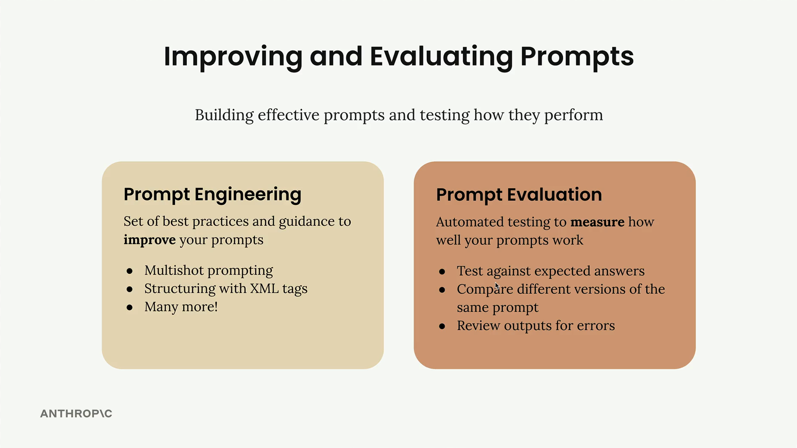
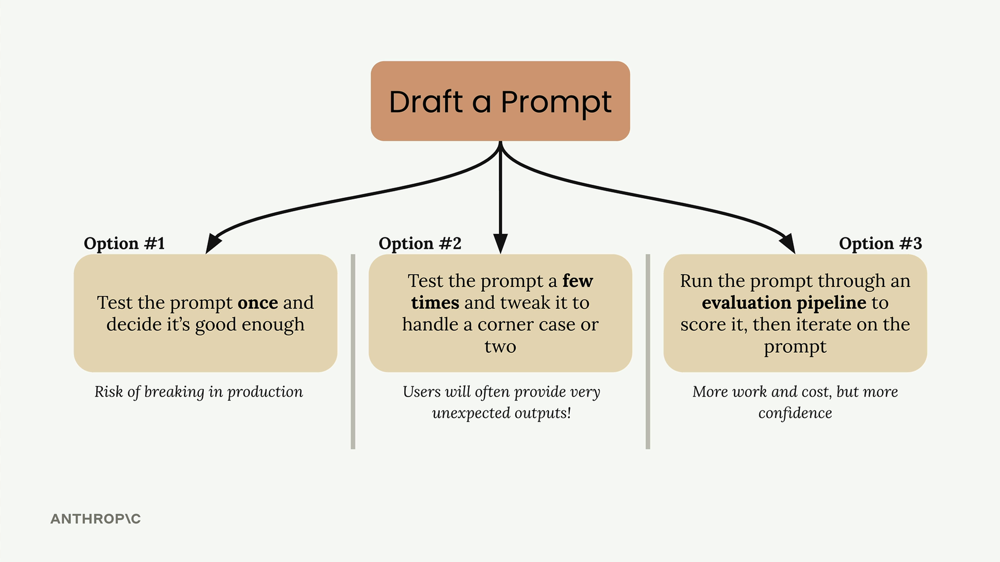

프롬프트 평가
Claude와 함께 작업할 때, 좋은 프롬프트를 작성하는 것은 시작에 불과합니다. 신뢰할 수 있는 AI 애플리케이션을 구축하려면 두 가지 핵심 개념을 이해해야 합니다: 프롬프트 엔지니어링과 프롬프트 평가입니다. 프롬프트 엔지니어링은 더 나은 프롬프트를 작성하는 기법을 제공하고, 프롬프트 평가는 해당 프롬프트가 실제로 얼마나 잘 작동하는지 측정하는 데 도움을 줍니다.

프롬프트 엔지니어링 vs 프롬프트 평가
프롬프트 엔지니어링은 효과적인 프롬프트를 작성하기 위한 도구 모음입니다. 다음과 같은 기법들이 포함됩니다:
- 멀티샷 프롬프팅
- XML 태그를 활용한 구조화
- 기타 다양한 모범 사례
이러한 기법들은 Claude가 여러분이 원하는 것과 응답 방식을 정확히 이해하는 데 도움을 줍니다.
프롬프트 평가는 다른 접근 방식을 취합니다. 프롬프트 작성 방법에 집중하는 대신, 자동화된 테스트를 통해 효과를 측정하는 것입니다. 다음을 수행할 수 있습니다:
- 예상 답변과 비교 테스트
- 동일 프롬프트의 다양한 버전 비교
- 오류에 대한 출력 검토
프롬프트 작성 후 세 가지 경로
프롬프트를 작성한 후에는 일반적으로 다음에 무엇을 할지에 대해 세 가지 선택지를 마주하게 됩니다:

옵션 1: 프롬프트를 한 번 테스트하고 충분히 좋다고 판단하는 것입니다. 이는 사용자가 예상치 못한 입력을 제공할 때 프로덕션에서 문제가 발생할 상당한 위험을 내포합니다.
옵션 2: 프롬프트를 몇 번 테스트하고 한두 가지 예외 케이스를 처리하도록 조정하는 것입니다. 옵션 1보다는 낫지만, 사용자들은 여러분이 고려하지 않은 매우 예상치 못한 출력을 종종 제공합니다.
옵션 3: 프롬프트를 평가 파이프라인을 통해 점수를 매기고, 객관적인 지표를 기반으로 프롬프트를 반복 개선하는 것입니다. 이 접근 방식은 더 많은 작업과 비용이 필요하지만, 프롬프트의 신뢰성에 대해 훨씬 더 높은 확신을 줍니다.
대부분의 엔지니어가 테스트 함정에 빠지는 이유
옵션 1과 2는 저 자신을 포함한 모든 엔지니어가 빠지는 흔한 함정입니다. 중요한 애플리케이션을 위한 프롬프트를 작성하고 충분히 철저하게 테스트하지 않는 것은 자연스러운 일입니다. 우리는 실제 사용자가 얼마나 많은 예외 케이스를 만날지 과소평가하는 경향이 있습니다.
현실은 프롬프트를 프로덕션에 배포하면 사용자들이 여러분이 전혀 예상하지 못한 방식으로 상호작용한다는 것입니다. 제한된 테스트 중에 탄탄해 보였던 프롬프트도 실제 환경의 다양한 입력을 맞닥뜨리면 빠르게 무너질 수 있습니다.
평가 우선 접근법
옵션 3은 프롬프트 개발에 대한 보다 체계적인 접근 방식을 나타냅니다. 프롬프트를 평가 파이프라인을 통해 실행하면 더 광범위한 테스트 케이스에서의 성능에 대한 객관적인 지표를 얻을 수 있습니다. 이 데이터 중심 접근 방식을 통해 다음을 수행할 수 있습니다:
- 프로덕션 문제가 되기 전에 약점 파악
- 다양한 프롬프트 버전을 객관적으로 비교
- 측정 가능한 개선을 바탕으로 자신 있게 반복 개선
- 더 신뢰할 수 있는 AI 애플리케이션 구축
이 접근 방식은 시간과 테스트 인프라에 대한 사전 투자가 더 필요하지만, 최종 애플리케이션의 신뢰성과 견고성 면에서 그 보상을 받습니다. 목표는 사용자가 문제를 만난 후가 아니라 개발 중에 문제를 잡아내는 것입니다.